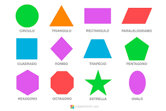

Introducción
las figuras geométricas nos sirven para representar datos, objetos y/o ideas de manera visual.
las figuras geométricas nos sirven para representar datos, objetos y/o ideas de manera visual.
tienen dimensiones, simetría, ángulos, lados, vértices y caras.
